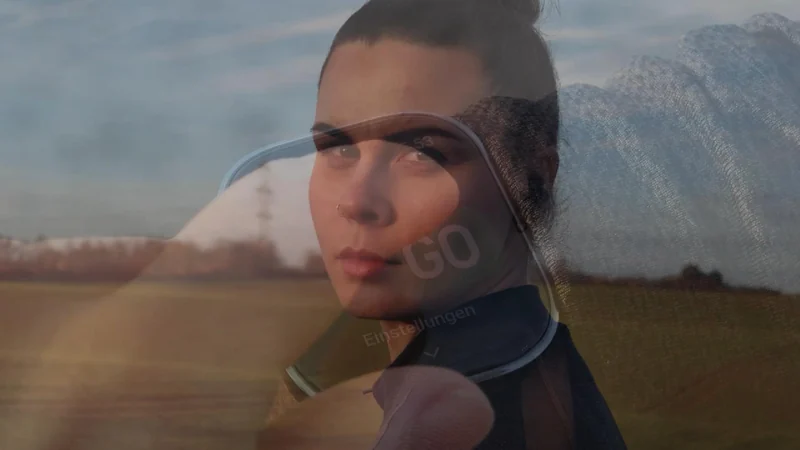
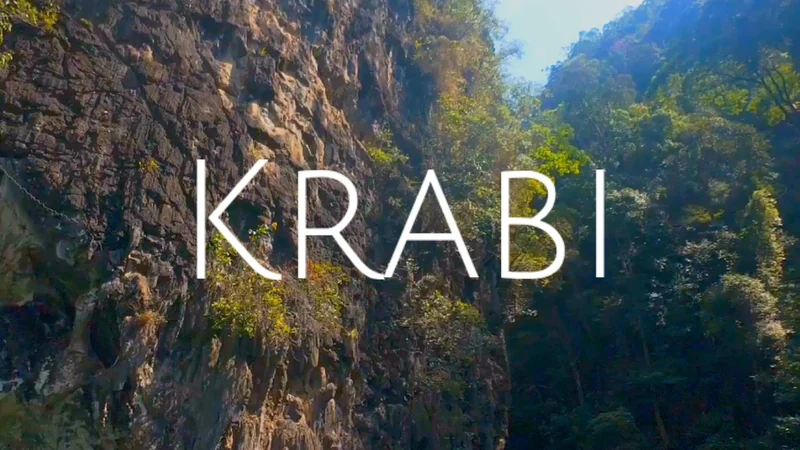

Kreatives Projekt
Eine Alltagstätigkeit, filmisch erzählt mit Fokus auf Bildgestaltung, Schnitt und Stimmung.
Eine Sammlung kleiner Videoprojekte und Short Clips. Videografie ist mein Hobby: Ich halte Momente fest und erzähle Erlebtes in kurzen Clips.

Eine Alltagstätigkeit, filmisch erzählt mit Fokus auf Bildgestaltung, Schnitt und Stimmung.

Ein Einblick in meine Reise nach Thailand.
Ein Beispielvideo zur Demonstration einer späteren YouTube-Einbindung.